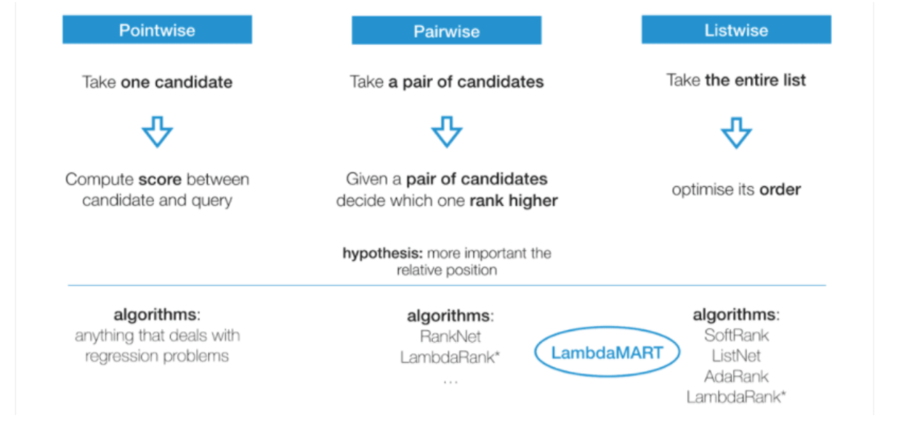
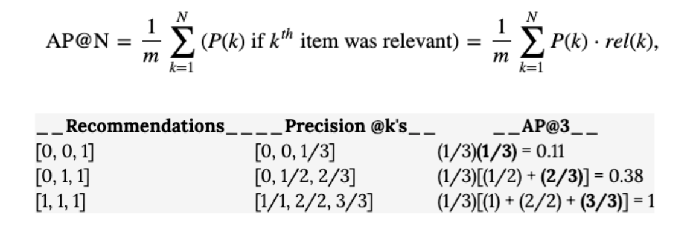
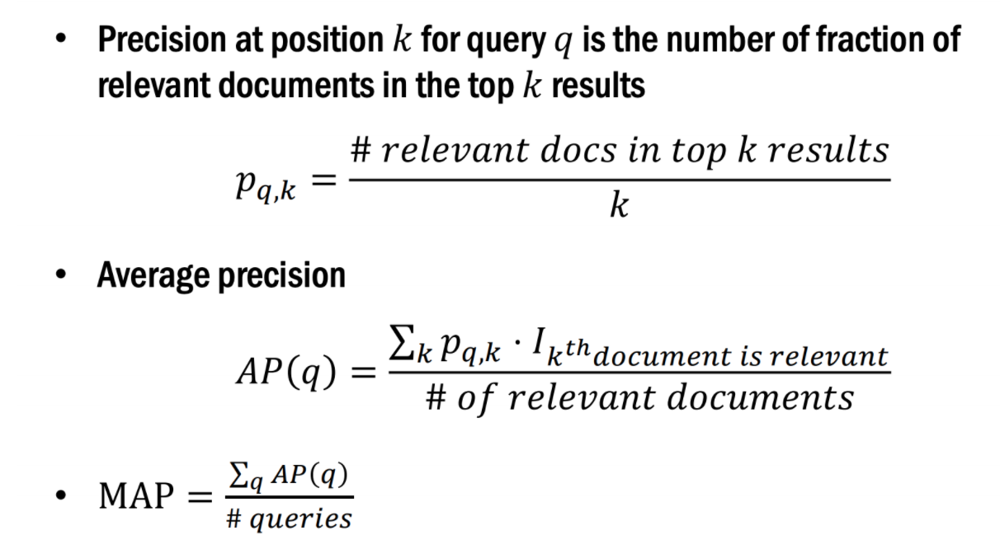
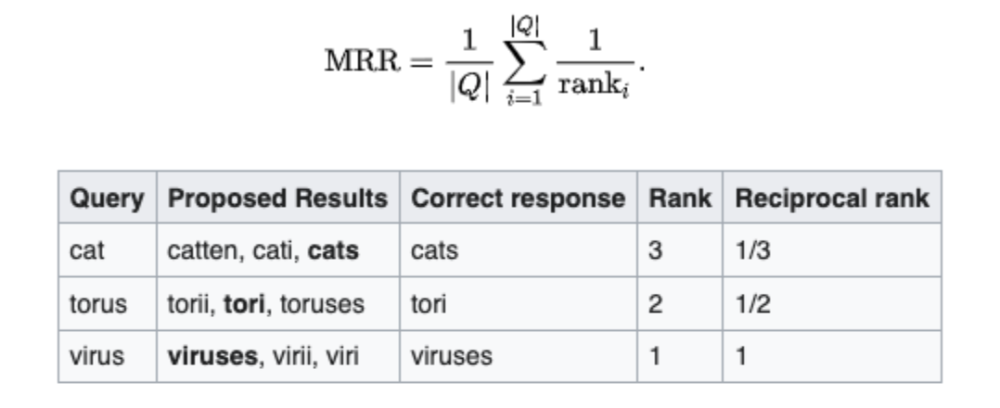

Learning to Rank
Overview
We try to learn a function f(q,D), given a query “q” and a relevant list of items “D” to predict the order (ranking) of all items within a list.
Goal: we really want is to know how relevant is an item.
The training data for a learning to rank model consists of a list of results for a query and a relevance rating for each of those results with respect to the query.
Search Engines:
To perform learning to rank you need access to training data, user behaviors, user profiles, and a powerful search engine such as SOLR.
The training data for a LTR model consists of a list of items and a “ground truth” score for each of those items.
This translates to a list of results for a query and a relevance rating for each of those results with respect to the query.
Methods
The below methods are distinguished by how we formulate the loss function in the underlying machine learning task.

Pointwise
One instance of the set is considered at a time, using any kind of classifier or regression to predict how relevant it is in the current query.
Use each point’s predicted relevance to order the set.
Drawbacks
Ignores the fact that some documents are associated with the same query and some are not.
If the number of documents varies largely for different queries, the overall loss function will be dominated by those queries with a large number of documents.
The position of documents in the ranked list is not factored into the loss function(s).
Pairwise
This approach looks at two documents together and uses classification or regression — to decide which of the pair ranks higher.
Pairs of queries and documents with a corresponding label representing a score.
If 𝑠𝑐𝑜𝑟𝑒 (𝑞, 𝑑1) > 𝑠𝑐𝑜𝑟𝑒(𝑞, 𝑑2), then 𝑑1 is more relevant to query 𝑞 than 𝑑2.
The goal is to minimize the number of cases where the pair of results are in the wrong order relative to the ground truth (also called inversions).
Training Data:
Query-document pairs are converted into feature vectors that include features such as PageRank score, number of times the query keyword appears in the document, etc.
Slack Approach: This approach is used to judge the relative relevance of documents within a single search using clicks.
Listwise
Approaches decide on the optimal ordering of an entire list of documents.
Ground truth lists are identified, and the machine uses that data to rank its list.
Listwise approaches use probability models to minimize the ordering error
Loss Function
LambdaMARTis a loss function (“Lambda”) attached to a gradient boosting forest (“MART” — Multiple additive regression tree).A gradient boosting forest improves its predictions by training a new tree to predict the errors (“gradients” of the loss function) of the trees which came before.
Predictions are made by summing the original estimate of the first tree with all corrections imposed by subsequent trees.
Ease of implementation. The xgboost package has a highly optimized implementation of LambdaMART which allows us to prototype models in minutes with a single line of code.
rank:pairwise: set XGBoost to do ranking task by minimizing the pairwise loss.
Evaluation
Mean Average Precision, or MAP. This is a very popular evaluation metric for algorithms that do information retrieval, like google search.If you have an algorithm that is returning a ranked ordering of items, each item is either hit or miss (like relevant vs. irrelevant search results) and items further down in the list are less likely to be used (like search results at the bottom of the page).
We want a metric that rewards us for getting lots of “correct” or relevant recommendations, and rewards us for having them earlier on in the list (higher ranked).
Mean Average Precision
MAPis very popular evaluation metric for algorithms that do information retrieval like google search results.Average Precision is a measure that takes in a ranked list of your N recommendations and compares it to a list of the true set of “correct” or “relevant” recommendations for that user.
Average Precision rewards you for having a lot of “correct” (relevant) recommendations in your list, and rewards you for putting the most likely correct recommendations at the top (you are penalized more when incorrect guesses are higher up in the ranking).
So the order of “hits” and “misses” matters a lot in computing an AP score.
 
Mean Reciprocal Rank
A statistic that measures for evaluating any process that produces a list of possible responses to a sample of queries, ordered by probability of correctness.
The reciprocal rank of a query response is the multiplicative inverse of the rank of the first correct answer:

Example
Given those three samples, we could calculate the mean reciprocal rank as (1/3 + 1/2 + 1)/3 = 11/18 or about 0.61.
Compute Normalized Discounted Cumulative Gain
Sum the true scores ranked in the order induced by the predicted scores,after applying a logarithmic discount.
Then divide by the best possible score (Ideal DCG, obtained for a perfect ranking) to obtain a score between 0 and 1.
This ranking metric yields a high value if true labels are ranked high by y_score.
Affinity Scores
Derive a metric for computing affinity or user-user relevance:
1. The strength of the action:
Each action amongst share, like, tag, comment, etc. has a weight associated with it.
So, the more effort you put into that post, the higher is your affinity score.
Affinity score is taken into account only if you interact with it.
2. How close the person who took the action was to you:Your linkage with the person posting the content is considered an important factor for calculating the affinity score.
So, a friend that shares 50 mutual friends will have a higher affinity than a friend who shares 10 mutual friends. 3. How long ago they took the action
Time is inversely proportional to the affinity score.
So, if a person is posting about his birthday and you open your feeds after a week, then definitely those posts are not displayed on your wall.
Edge Weight:
For example, photos and videos have a higher weight than links.
So, comments on photos are more likely to be highlighted than comments on links.